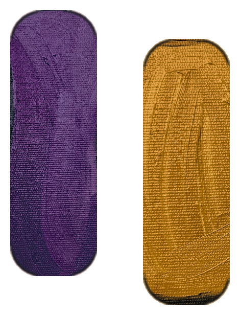

The 2-minute reset
For the middle of a fight. Headphones help. Then press play.
0:00 / 2:00
- 1Notice: “This is the glitch.”
- 2Two short breaths in, one long breath out. Three times.
- 3“I want to get this right. Give me a few minutes, and I’ll come back.”
This helps in the moment. The 30-day Glitch Reset retrains your body so the next fight doesn’t take over so fast.
See the 30-day program